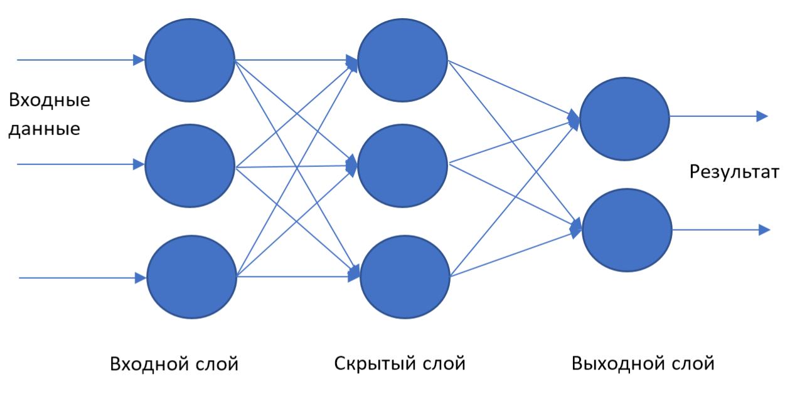
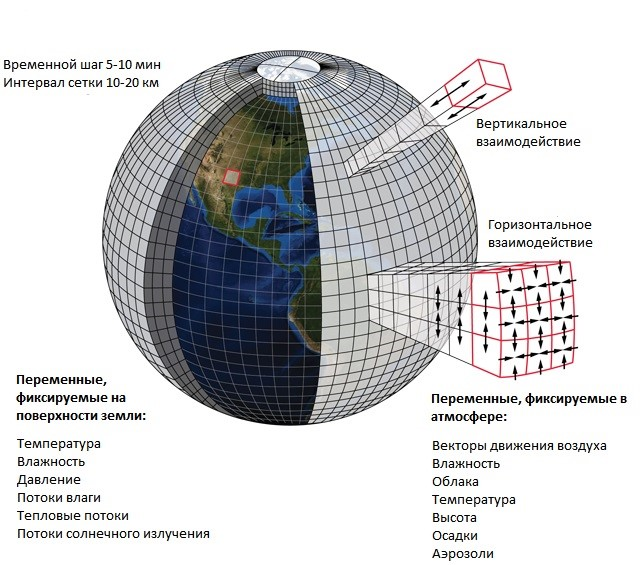
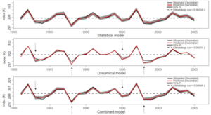

Таха Хусейн 2А, Астана, Казахстан
e-mail: info@viratec.kz
Таха Хусейн 2А, Астана, Казахстан
e-mail: info@viratec.kz

Таха Хусейн 2А, Астана, Казахстан
e-mail: info@viratec.kz
Таха Хусейн 2А, Астана, Казахстан
e-mail: info@viratec.kz
В целом, так же, как и прогнозирование ветренной генерации, методы прогнозирования солнечной генерации делятся на три категории:
Физический метод прогнозирования солнечной генерации может осуществляться посредством как числовых моделей прогнозирования погоды — NWP (Numerical Weather Prediction) так и посредством наблюдения за движением воздушных масс со спутников или с земли с помощью наземных камер. Использование того или иного метода прогнозирования на прямую зависит от того с какой целью используются прогнозы. Здесь
можно ознакомиться с основной информацией по прогнозам генерации ВИЭ и их применением. На рисунке 1 изображены вышеуказанные методы прогнозирования и области их применения.
 Рисунок 1 – Применение физических методов прогнозирования
Рисунок 1 – Применение физических методов прогнозирования
Модели, основанные на облачных снимках и спутниковых наблюдениях, анализируют небесное пространство с целью определения информации по движению воздушных масс, которая в свою очередь используется для прогнозирования облачности. При прогнозировании солнечной радиации стоит учитывать, что параметрами наиболее сильно влияющие на интенсивность солнечной радиации – это облачность и ее оптическая глубина. Также, важным аспектом, влияющим на прогнозирование солнечной радиации, является определение типов и структуры облаков.
Прогнозирование генерации ветряных электрических станций (ВЭС) является одним из наиболее развитых направлений, по сравнению с прогнозированием генерации других видов возобновляемых источников энергии (ВИЭ). При прогнозировании генерации ВЭС, так же, как и при прогнозировании солнечной генерации, в основном используют следующие методы:
Рисунок 2 – Устройство для слежения за облаками
Общее описание числовых моделей можно найти здесь. Статистические методы. Методы прогнозирования, основанные на исторических данных о солнечной радиации, подразделяются на две категории: статистические и методы обучения.  Рисунок 3 – Архитектура нейронных сетей/span>
Физический метод прогнозирования-метод в основе которого лежат законы физики, описывающие процессы, происходящие в атмосфере. Модели, основанные на физических методах  прогнозирования, называются числовыми моделями прогнозирования погоды — NWP (Numerical Weather Prediction). В данных моделях, интересующие метеорологические параметры (скорость ветра, температура воздуха и т.д.) рассчитываются с помощью дифференциальных уравнений, которые в свою очередь описывают динамику того или иного процесса. Основным преимуществом числовых моделей является относительно низкая погрешность прогнозирования и большой временной горизонт прогнозирования. Основным недостатком числовых моделей является высокая стоимость прогнозов. Тем не менее, числовые модели прогнозирования являются основой прогнозирования генерации электрической энергии ВИЭ, без которых было бы сложно добиться высокой точности прогнозов.
Статистический метод, основной сутью которого является определение корреляции производства электрической энергии ВИЭ от метеорологических параметров (скорости ветра, температуры наружного воздуха и т.д.). Основным преимуществом моделей, основанных на статистических методах прогнозирования, является относительно не дорогая стоимость прогнозов, простота использования моделей и универсальность  (модели, основанные на статистических методах прогнозирования, могут быть применимы к любым условиям, без потребности сильного изменения модели). Основным недостатком данных моделей является, сравнительно низкая точность прогнозирования. Статистические модели, в основном, используются как инструмент для корректировки прогнозов. Для обеспечения точности прогнозов, компания VIRATEC использует несколько моделей, основанных как на физических, так и на статистических методах прогнозирования. Основными числовыми моделями, используемыми компанией VIRATEC, являются WRF и ECMWF.
Есть вопросы?